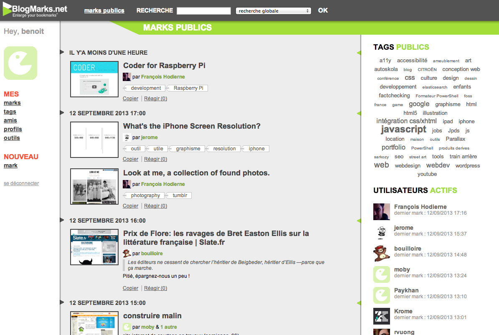

Benoît Fleury
You can print this detailed résumé (3 pages) or download the summary as a one-page PDF.
If you think I could be a good fit, contact me at me@benfle.com.
Aspiring Designer of Software Systems
Eleos Technologies Nov. 2012 — Feb. 2013
Document data extraction
"We hired Benoit to work on some very technically challenging projects with open-ended and ambiguously defined objectives due to the nature of the work. He jumped in and delivered outstanding results quickly and consistently, with excellent communication throughout the engagement. Benoit is a highly intelligent and very skilled software engineer, and I hope to work with him again in the future" — Ryan Crum, CTO
I engineered a web application to crawl county web sites, extract the data from PDF tax forms using OCR (Optical Character Recognition), and store them in a relational database. I designed and engineered a simple web interface to query the data set and review the daily reports.
See the case study at eleostech.com.
Clojure, PostgreSQL, Heroku, Amazon S3, Tesseract, JavaScript, HTML
Bayes classifier
I engineered a Bayes classifier, very similar to the ones we use for spam filtering, to automatically detect the type of mobile scanned documents based on their textual content. I designed and engineered a simple web application to manage the training set, retrain the classifier and run it on new documents.
Clojure, PostgreSQL
OCR pipeline
The goal of the project was to improve the search results of a mobile document scanning solution. Among other improvements made to the pipeline, I integrated the Stroke Width Transform algorithm and a bar code detection library.
Clojure, C, Java, Tesseract
Amazon May 2011 — Apr. 2012

Kindle with special offers
Amazon Local delivers daily deals to its customers through a dedicated website. I initiated the engineering of the backend services to support AmazonLocal on Kindle with special offers:
- transformation of the daily deal into a kindle ad
- purchase workflow (from the device)
- delivery of the voucher as an ebook
- backend interface for the production associates
Java, Ruby on Rails, Oracle, Amazon S3, JavaScript, HTML
Microsoft Feb. 2008 — Apr. 2011
"Benoit is a talented developer with a passion for sound design, best practices, and agility. I've been impressed by his capability to handle complex end to end scenarios and come up with a neat and efficient solution." — Eric Brun, Architect
During these 3 years at Microsoft, I spent half the time working as a software design engineer and the other half as a program manager. Below are my projects as a software design engineer. The next section describes my projects as a program manager.
Mobile advertising platform
I participated to the development of several versions of the mobile advertising platform.
C#, .NET, SQLServer, COSMOS
Mobile ad delivery protocol
I designed two versions of our mobile ad delivery protocol. I educated my coworkers and the management about the REST architectural style. I drove adoption of JSON as an alternative to XML to represent ads. I designed a REST-based ad delivery protocol supporting XML and JSON. The approach has further been validated by our early compliance to the API guidelines of the entire advertising group.
REST, Web Architecture, HTTP, XML, JSON
Event system
Events are fundamental in an ad delivery engine. They're used for counting, logging, tracing, debugging… I designed and proposed an object-oriented event system for the platform. I participated to the engineering of the system. The "aspect-oriented" design helped in simplifying the source code.
C#, .NET
Support tool
Based on my previous experience at ScreenTonic, I proposed the creation of a support tool to manually build queries to our ad platform. The tool is used by the support team to troubleshoot potential issues. I specified and engineered the web-based tool which proved to be very valuable to both support and development teams by reducing the number of interactions between them.
C#, .NET, HTML, CSS, HTTP
Testing
As a new team member, I wrote tests for the platform to get used to the code base. I wrote several unit tests to reach a 80% code coverage. I engineered a simple end-to-end test framework.
C#, .NET
Microsoft Feb. 2008 — Apr. 2011
Working group
The success of the vteam was in direct relation to the committed time and effort Benoit provided. Further, Benoit acted as a superb representative for our team by providing insight and understanding for other groups represented by the various vteam members. — Working group organizer.
As a program manager, I participated to a mobile advertising vTeam (virtual team) focused on competition and delivered a presentation during an internal summit.
Mobile ad client library
The mobile ad client library is a high-performance, low resource usage C library for fetching and managing ads on mobile devices: Windows Mobile 6.x, iPhone and Android. I delivered a detailed specification of the library to describe its requirements, the ad caching algorithm, and the impression and click reporting with exponential backoff mechanisms.
Threat model
I designed the threat model for the mobile ad client library that has been approved by the security team.
New mobile ad type
I specified a new type of ad appropriate to mobile devices. I described the user experience and the requirements. I drove adoption by the tean of the new type of ad.
Mobile coupon platform
I wrote and drove adoption of a list of core client scenarios with the Bing mobile team for a mobile coupon platform. I investigated scenarios and requirements related to billing and fraud components. I made a proposal to the business team that has been accepted and I delivered a detailed specification of these two components.
ScreenTonic Nov. 2006 — Jan. 2008
Development and support
During my time at ScreenTonic, I engineered several features in the ad server to support new business requirements. I participated to the internal and external support activities.
Linux, Apache, MySQL, PHP5
Framework for integrated test
As features were added, the configuration of ad campaigns got complex and it became hard to predict the behavior of the campaigns over time. We needed a tool to communicate between the production associates and the developers. I proposed to create a Framework for integrated test. I engineered the tool and wrote the test fixtures for the existing features.
PHP5, HTML
Ad publishing protocol
Several times a day, the production associates needed to publish their ad campaigns from ScreenTonic's ad manager, a web-based application, to the ad server, a web service that delivers the ads to the mobile web publishers. I designed a HTTP API (standard error codes (4xx, 5xx), SSL + basic authentication). I proposed the adoption of RDF to describe the ad campaigns. I implemented an object-oriented API in PHP to generate and navigate ad campaigns. I provided code examples for publishing ad campaigns from the ad manager. I delivered a detailed documentation for the protocol.
Web Architecture, REST, HTTP, PHP5, RDF
Ad delivery algorithm
The share of voice-based delivery algorithm we were using had disadvantages in some extreme cases. I was asked to propose a new algorithm. I wrote a white paper on the state of the art of ad delivery. I implemented prototypes in python to test several algorithms. I proposed a new algorithm for the ad server. However, the company was acquired before the algorithm went into production.
Python
The Spread toolkit
Logging is one of the critical areas in an ad delivery platform. Our custom built logging mechanism across instances was starting to show its limits in term of scalability and reliability. I reviewed several bus messaging systems. I delivered a detailed white paper about the Spread Toolkit. I proposed a road map to integrate the toolkit into our technology stack. However, the company was acquired before the integration work started.
Blogmarks.net 2003 — present
 Blogmarks.net is a social bookmarking service. Founded in late 2003 and heartquartered in France, we are non-profit and independant. We believe in the open web, think internet services should be sustainable, build for the long term.
I "co-founded" the site and engineered the backend services and Atom-based API. The development is currently on hold, but the service is still operating.
Linux, Apache, MySQL, PHP5, REST, XML
ENSEEIHT Sep. 2002 — Jun. 2006
MS in Computer Science and Applied Mathematics at École Nationale Supérieure d'Électrotechnique, d'Électronique, d'Informatique, d'Hydraulique et des Télécommunications.